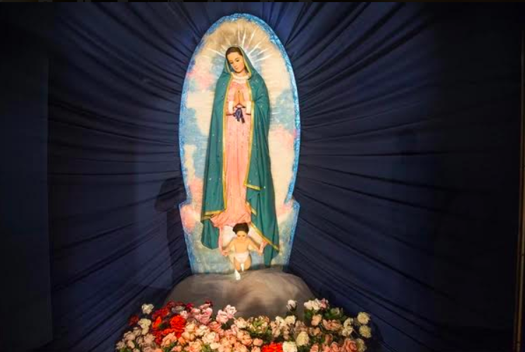
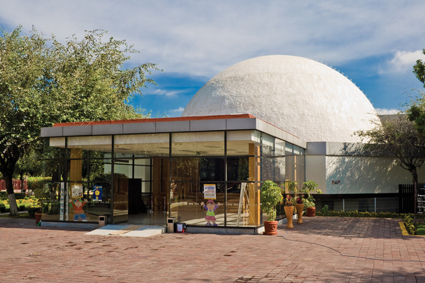
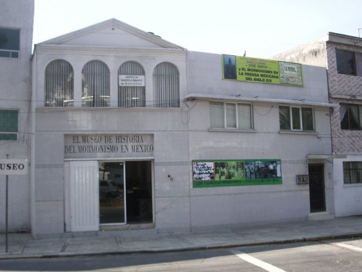
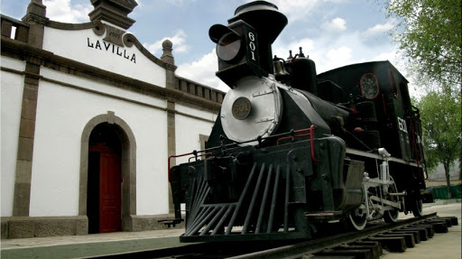

En esta alcaldia ubicaremos un total de 6 museos, de entre ellos destacan los siguientes museos debido a la popularidad considerando mas importante al museo de figuras de cera.

Museo de Figuras de Cera de la Villa
Horarios y costos
Abierto al público de lunes a domingo de 9:30 a 19 hrs.
Entrada general $15.
Niños menores de 6 años: $6
Particular
Calz. de los Misterios 880
Col. Villa de Guadalupe
CP 07020
Gustavo A. Madero, Gustavo A. Madero, Ciudad de México
Tels.: (55) 5781 9455

Planetario Luis Enrique Erro
Horarios y costos
Abierto al público de martes a domingo de 10:00 a 17:00 hrs.
$38 público en general.
$32 estudiantes, profesores, INAPAM con credencial vigente, niños menores de 12 años y discapacidad.
Instituto Politécnico Nacional (IPN)
Av. Wilfrido Massieu s/n
Col. Zacatenco
CP 07738
Gustavo A. Madero, Gustavo A. Madero, Ciudad de México
Tels.: 55 5729 6000 ext. 53925

Museo Nacional de la Estampa (MUNAE)
Horarios y costos
Abierto al público de martes a sábado
de 10:00 a 16:00 hrs.
Entrada libre
El Museo de Historia del Mormonismo en México, A.C.
Av. 510 núm. 79
Col. San Juan de Aragón, 1a. sección
CP 07950
Gustavo A. Madero, Gustavo A. Madero, Ciudad de México

Museo Nacional de la Revolución
Horarios y costos
Abierto al público de martes a domingo
de 10 a 17 hrs.
Entrada libree
Secretaría de Cultura de la Ciudad de México
Alberto Herrera s/n entre Hidalgo y Aquiles Serdán
Col. Aragón La Villa
CP 07000
Gustavo A. Madero, Gustavo A. Madero, Ciudad de México
Tels.: 55 5118 6407, 55 5118 6409